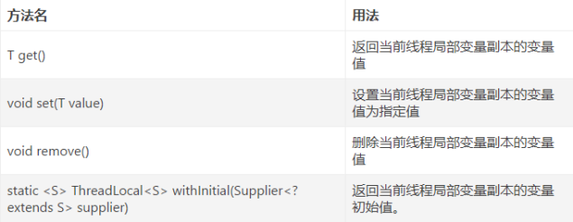
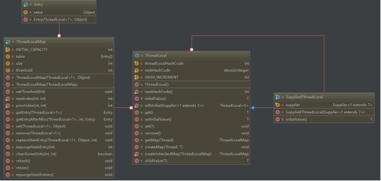
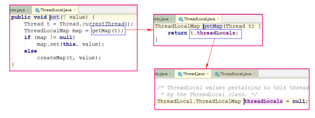
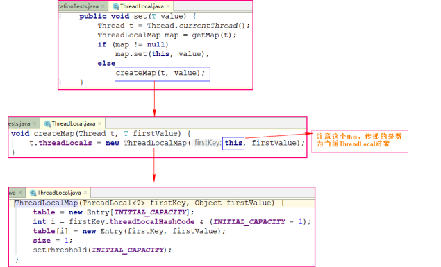
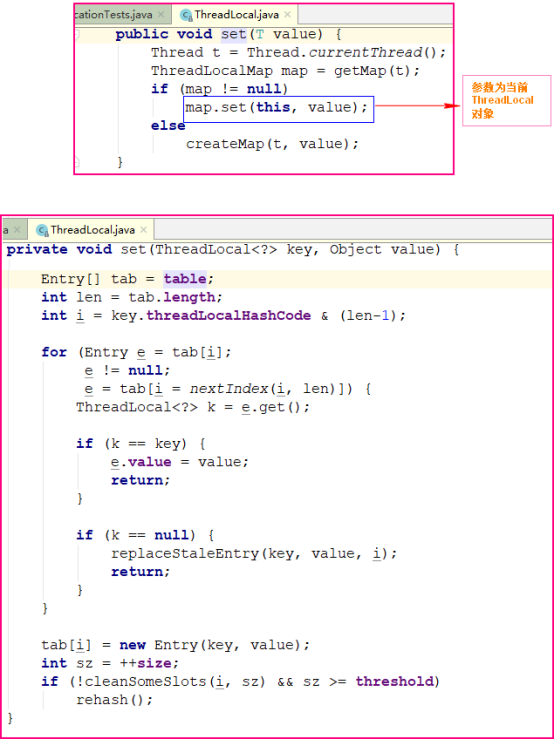
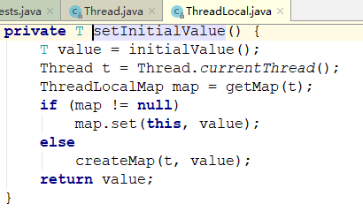
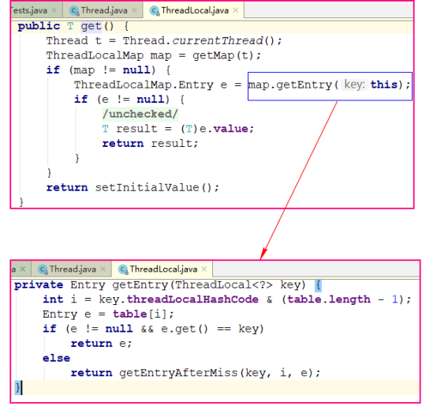

ThreadLocal，很多地方叫做线程本地变量，也有些地方叫做线程本地存储。可能很多朋友都知道ThreadLocal为变量在每个线程中都创建了一个副本，那么每个线程可以访问自己内部的副本变量。
用ThreadLocal声明的变量可以在线程内部提供变量副本，线程修改ThreadLocal声明的变量互不影响，这就不存在并发的情况了。
1.ThreadLocal的基本使用 
实例：
1 2 3 4 5 6 7 8 9 10 11 12 13 14 15 16 17 18 19 20 21 22 23 24 25 26 27 28 29 30 31 32 33 34 35 public class ThreadLocalDemo { // 初始化ThreadLocal的值————第一种方法：实现抽象方法 // private static ThreadLocal threadLocal = ThreadLocal.withInitial(new Supplier<String>() { // @Override // public String get() { // return "Initial value"; // } // }); // 初始化ThreadLocal的值————第二种方法：使用Lambda表达式 private static ThreadLocal threadLocal = ThreadLocal.withInitial(() - > { return "Initial value"; }); // 初始化ThreadLocal的值————第三种方式重写initialValue()方法 // private static ThreadLocal threadLocal = new ThreadLocal(){ // @Override // protected Object initialValue() { // return "Initial value"; // } // }; public static void main(String[] args) { System.out.println("ThreadLocal的初始值：" + threadLocal.get()); threadLocal.set("Main方法"); new Thread(() - > { System.out.println("子线程获取ThreadLocal的值：" + threadLocal.get()); threadLocal.set("Thread线程"); System.out.println("子线程执行set方法后，子线程获取ThreadLocal的值：" + threadLocal.get()); threadLocal.remove(); System.out.println("子线程执行remove方法后，子线程获取ThreadLocal的值：" + threadLocal.get()); }).start(); System.out.println("主线程执行set方法后，主线程获取ThreadLocal的值：" + threadLocal.get()); threadLocal.remove(); System.out.println("主线程执行remove方法后，主线程获取ThreadLocal的值：" + threadLocal.get()); } }
输出结果
1 2 3 4 5 6 1.ThreadLocal的初始值：Initial value 2.主线程执行set方法后，主线程获取ThreadLocal的值：Main方法 3.主线程执行remove方法后，主线程获取ThreadLocal的值：Initial value 4.子线程获取ThreadLocal的值：Initial value 5.子线程执行set方法后，子线程获取ThreadLocal的值：Thread线程 6.子线程执行remove方法后，子线程获取ThreadLocal的值：Initial value
2.ThreadLocal源码剖析 先看下ThreadLocal类的类图：

可以看出ThreadLocal有两个静态内部类，分别是SuppliedThreadLocal和ThreadLocalMap。实际上，ThreadLocal 类的核心就是 ThreadLocalMap 这个内部类。当创建线程的时候，线程对象都会有 ThreadLocalMap 类型的成员变量。
*ThreadLocalMap
1 2 3 4 5 6 7 8 9 10 11 12 13 14 15 16 17 18 19 20 21 22 23 24 25 26 27 28 29 30 31 32 33 34 35 36 37 38 39 40 41 42 43 44 45 46 47 48 49 50 51 52 53 54 55 56 57 58 59 60 61 62 63 64 65 66 67 68 69 70 71 72 73 74 75 76 77 78 79 80 81 82 83 84 85 86 87 88 89 90 91 92 93 94 95 96 97 98 99 100 101 102 103 104 105 106 107 108 109 110 111 112 113 114 115 116 117 118 119 120 121 122 123 124 125 126 127 128 129 130 131 132 133 134 135 136 137 138 139 140 141 142 143 144 145 146 147 148 149 150 151 152 153 154 155 156 157 158 159 160 161 162 163 164 165 166 167 168 169 170 171 172 173 174 175 176 177 178 179 180 181 182 183 184 185 186 187 188 189 190 191 192 193 194 195 196 197 198 199 200 201 202 203 204 205 206 207 208 209 210 211 212 213 214 215 216 217 218 219 2.static class ThreadLocalMap { 3. 4. static class Entry extends WeakReference<ThreadLocal<?>> { 5. Object value; 6. Entry(ThreadLocal<?> k, Object v) { 7. super(k); 8. value = v; 9. } 10. } 11. 12. // Entry数组的初始容量 13. private static final int INITIAL_CAPACITY = 16; 14. 15. // ThreadLocalMap对象实际上由Entry数组记录ThreadLocal变量 16. private Entry[] table; 17. 18. // Entry数组元素的个数 19. private int size = 0; 20. 21. // Entry扩容的阀值 22. private int threshold; 23. 24. // 设置Entry数组的阀值，长度为 len 的 2/3 倍 25. private void setThreshold(int len) { 26. threshold = len * 2 / 3; 27. } 28. 29. // Entry数组的下一个索引 30. private static int nextIndex(int i, int len) { 31. return ((i + 1 < len) ? i + 1 : 0); 32. } 33. 34. // Entry数组的上一个索引 35. private static int prevIndex(int i, int len) { 36. return ((i - 1 >= 0) ? i - 1 : len - 1); 37. } 38. 39. // 初始化ThreadLocalMap对象 40. ThreadLocalMap(ThreadLocal<?> firstKey, Object firstValue) { 41. table = new Entry[INITIAL_CAPACITY]; 42. int i = firstKey.threadLocalHashCode & (INITIAL_CAPACITY - 1); 43. table[i] = new Entry(firstKey, firstValue);// 初始化Entry 44. size = 1; 45. setThreshold(INITIAL_CAPACITY); 46. } 47. 48. // ThreadLocal.set()主要核心方法 49. private void set(ThreadLocal<?> key, Object value) { 50. Entry[] tab = table; 51. int len = tab.length; 52. int i = key.threadLocalHashCode & (len - 1);// ThreadLocal对象经过哈希算法确定元素索引 i 53. 54. // 如果数组索引对应的Entry对象不是null，则进入for循环 55. for (Entry e = tab[i]; 56. e != null; 57. e = tab[i = nextIndex(i, len)]) { 58. ThreadLocal<?> k = e.get(); 59. 60. if (k == key) { 61. e.value = value; 62. return; 63. } 64. 65. // 如果key为null则说明该entry已经失效，执行replaceStaleEntry替换掉 66. if (k == null) { 67. replaceStaleEntry(key, value, i); 68. return; 69. } 70. } 71. // 向数组新增Entry对象元素 72. tab[i] = new Entry(key, value); 73. int sz = ++size; 74. if (!cleanSomeSlots(i, sz) && sz >= threshold)// 清除一些过期的值并且判断是否需要扩容 75. rehash(); 76. } 77. 78.// 将新元素放进陈旧的元素 79. private void replaceStaleEntry(ThreadLocal<?> key, Object value, 80. int staleSlot) { 81. Entry[] tab = table; 82. int len = tab.length; 83. Entry e; 84. 85. int slotToExpunge = staleSlot; 86. // 向前查找被弃用的索引 87. for (int i = prevIndex(staleSlot, len); 88. (e = tab[i]) != null; 89. i = prevIndex(i, len)) 90. if (e.get() == null) 91. slotToExpunge = i; 92. 93. // 向后查找key或者value为null的元素 94. for (int i = nextIndex(staleSlot, len); 95. (e = tab[i]) != null; 96. i = nextIndex(i, len)) { 97. ThreadLocal<?> k = e.get(); 98. 99. if (k == key) { 100. e.value = value; 101. 102. tab[i] = tab[staleSlot]; 103. tab[staleSlot] = e; 104. 105. // 如果存在则清除被弃用的Entry对象 106. if (slotToExpunge == staleSlot) 107. slotToExpunge = i; 108. cleanSomeSlots(expungeStaleEntry(slotToExpunge), len); 109. return; 110. } 111. 112. if (k == null && slotToExpunge == staleSlot) 113. slotToExpunge = i; 114. } 115. 116. tab[staleSlot].value = null; 117. tab[staleSlot] = new Entry(key, value); 118. 119. // 如果还有其它被弃用的Entry对象，执行cleanSomeSlots方法清除他们 120. if (slotToExpunge != staleSlot) 121. cleanSomeSlots(expungeStaleEntry(slotToExpunge), len); 122. } 123. 124. // 清除被弃用的元素 125. private boolean cleanSomeSlots(int i, int n) { 126. boolean removed = false; 127. Entry[] tab = table; 128. int len = tab.length; 129. do { 130. i = nextIndex(i, len); 131. Entry e = tab[i]; 132. if (e != null && e.get() == null) { 133. n = len; 134. removed = true; 135. i = expungeStaleEntry(i); 136. } 137. } while ( (n >>>= 1) != 0); 138. return removed; 139. } 140. 141. // 清除目标对象，并向后扫描清除被弃用的元素 142. private int expungeStaleEntry(int staleSlot) { 143. Entry[] tab = table; 144. int len = tab.length; 145. 146. tab[staleSlot].value = null; 147. tab[staleSlot] = null; 148. size--; 149. 150. Entry e; 151. int i; 152. for (i = nextIndex(staleSlot, len); 153. (e = tab[i]) != null; 154. i = nextIndex(i, len)) { 155. ThreadLocal<?> k = e.get(); 156. if (k == null) { 157. e.value = null; 158. tab[i] = null; 159. size--; 160. } else { 161. int h = k.threadLocalHashCode & (len - 1); 162. if (h != i) { 163. tab[i] = null; 164. 165. while (tab[h] != null) 166. h = nextIndex(h, len); 167. tab[h] = e; 168. } 169. } 170. } 171. return i; 172. } 173. 174. // 清除弃用元素并判断是否需要扩容 175. private void rehash() { 176. expungeStaleEntries(); 177. if (size >= threshold - threshold / 4) 178. resize(); 179. } 180. 181. // 扩容 182. private void resize() { 183. Entry[] oldTab = table; 184. int oldLen = oldTab.length; 185. int newLen = oldLen * 2; 186. Entry[] newTab = new Entry[newLen]; 187. int count = 0; 188. 189. for (int j = 0; j < oldLen; ++j) { 190. Entry e = oldTab[j]; 191. if (e != null) { 192. ThreadLocal<?> k = e.get(); 193. if (k == null) { 194. e.value = null; // Help the GC 195. } else { 196. int h = k.threadLocalHashCode & (newLen - 1); 197. while (newTab[h] != null) 198. h = nextIndex(h, newLen); 199. newTab[h] = e; 200. count++; 201. } 202. } 203. } 204. 205. setThreshold(newLen); 206. size = count; 207. table = newTab; 208. } 209. 210. // 清空被弃用的元素 211. private void expungeStaleEntries() { 212. Entry[] tab = table; 213. int len = tab.length; 214. for (int j = 0; j < len; j++) { 215. Entry e = tab[j]; 216. if (e != null && e.get() == null) 217. expungeStaleEntry(j); 218. } 219. } 220.}
可以看到ThreadLocalMap的Entry继承了WeakReference，并且使用ThreadLocal作为键值。
至此，可能大部分朋友已经明白了ThreadLocal是如何为每个线程创建变量的副本的：
首先，在每个线程Thread内部有一个ThreadLocal.ThreadLocalMap类型的成员变量threadLocals，这个threadLocals就是用来存储实际的变量副本的，键值为当前ThreadLocal变量，value为变量副本（即T类型的变量）。
实际上，ThreadLocalMap是一个数组，而数组内的元素都是由key和value组成的Entry对象。ThreadLocalMap的key就是经过哈希算法计算出来的ThreadLocal对象。神奇的是，ThreadLocal的哈希算法可以保证只要在ThreadLocalMap数组长度为2的 N 次方的时候，哈希值能平均的分布,避免键冲突。
3.看一下set方法 
1) 获取当前线程对象
2) 以当前线程对象为参数获取，当前Thread对象中的ThreadLocalMap对象
3) 判断当前Thread对象中的ThreadLocalMap对象是否为null
*为null：为当前线程对象的ThreadLocalMaps成员变量初始化，并赋值

构造方法中会将val生成Entry对象存入Entry数组（索引为ThreadLocal对象内存地址哈希计算所得）
*不为null：调用ThreadLocalMap的set方法进行赋值

在ThreadLocalMap的set方法中，将传递来的参数ThreadLocal对象的地址值进行哈希计算出索引值，创建Val的Entry对象，将值插入所计算得出Entry数组的索引位置
4.看一下get方法
1) 获取当前线程对象
2) 以当前线程对象为参数获取，当前Thread对象中的ThreadLocalMap对象
3) 判断当前Thread对象中的ThreadLocalMap对象是否为null
*为null：进入初始化方法：创建ThrealocalMap，赋初始值

*不为null：调用ThrealocalMap的getEntry方法获取Entry对象，参数ThreadLocal对象

根据ThreadLocal对象的内存地址哈希计算得出指定ThreadLocal对象的值在Entry数据的存储索引，获取Entry对象进而获取值
领悟： 我们可以看出一个Thread对象的ThreadLocalMap成员变量是属于该线程对象的，所以ThreadLocalMap对象中的Entry数组也是属于该线程的，Entry数组索引由ThreadLocal对象内存哈希计算得出，元素为值封装的Entry对象，ThreadLocal对象的init***、get、set方法调用是加载ThreadLocal对象到Entry数组的时机，所以ThreadLocal对象用static修饰完全没有问题，因为每个线程对象的ThreadLocalMap对象是不同的，同时也只是取ThreadLocal对象的内存地址计算作为数组的索引